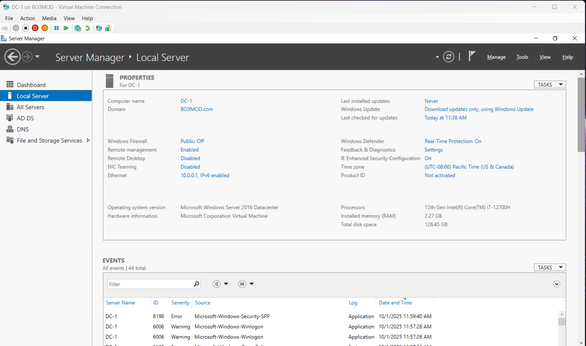
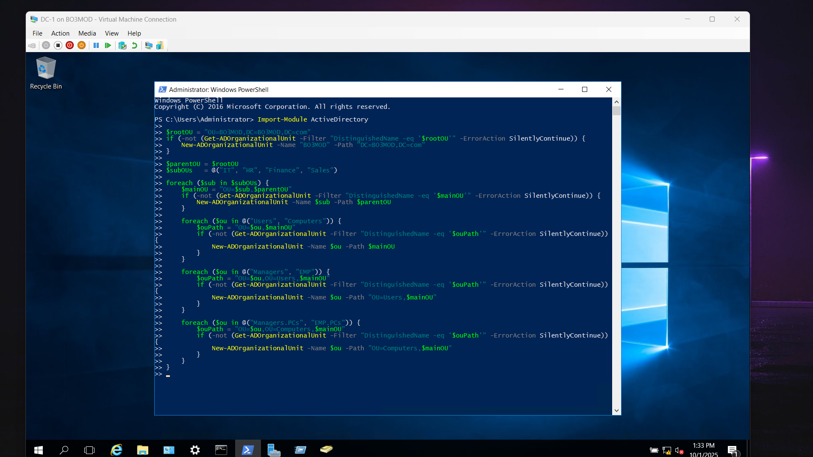
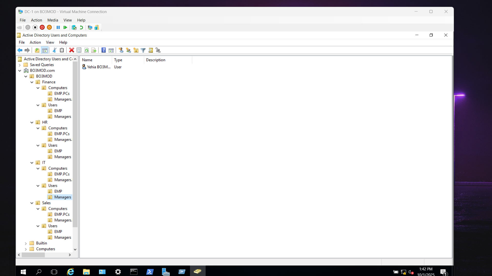

Project Overview
This project covers the installation and configuration of Active Directory Domain Services (AD DS).
It demonstrates practical skills in setting up and managing a Windows Server environment for enterprise use.
Steps Completed
- Installed Windows Server and promoted it to a Domain Controller.
- Configured Active Directory Domain Services (AD DS).
- Created Organizational Units (OUs) for departments (IT, HR, Sales).
- Added users and groups, applied appropriate permissions.
- Joined client machines to the domain for centralized management.
Screenshots
Below are some screenshots from the setup and configuration process:



⬅ Back to MCSA Projects